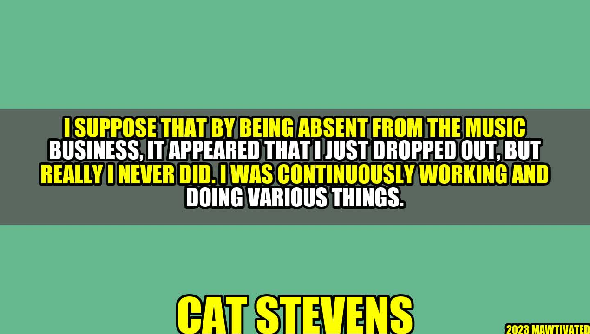

The Journey of Cat Stevens: Never Really Gone

Introduction
It's easy to believe that successful musicians have it all figured out. They have the talent, the passion, and the drive that propels them to stardom. However, there are times when even the most talented musicians disappear from the spotlight, leaving their fans to wonder where they've gone. One such musician is Cat Stevens. In this article, we'll explore the story of Cat Stevens, his background, and how he never really left the music business despite his long absence. We'll also look at some practical tips you can use to keep your own music career going strong, even during the toughest times.
The Story of Cat Stevens
Cat Stevens, born Steven Demetre Georgiou, started his music career in the late 1960s. He quickly gained a following with hits like "Matthew and Son" and "The First Cut is the Deepest." He also had a reputation for being a bit of a ladies' man, which only added to his allure. But fame wasn't all it was cracked up to be for Cat. He grew disillusioned with the music industry and began searching for something deeper. This search led him to the Muslim faith, and he eventually changed his name to Yusuf Islam. In 1977, Yusuf left the music industry and devoted himself to his faith, raising a family, and charitable work. He was largely absent from the music industry for nearly three decades. However, Yusuf never really left music behind. He continued to write songs and play guitar, and in the early 2000s, he began releasing new albums. He also performed at various events and concerts, including a Muhammad Ali tribute concert in 1993.
from Yusuf Islam
"When I left the music industry, it was because I felt like I had lost my way. I was more interested in fame and fortune than in making meaningful music. But even when I left, I never really stopped being a musician. I would write songs and play guitar whenever I had free time. Music was always in my heart." "For me, getting back into music was a slow process. I didn't want to rush into it and make the same mistakes I did before. I took my time, wrote songs that were true to who I was, and waited until I was truly ready to start performing again."
Practical Tips for Musicians
If you're a musician going through a difficult time, here are some practical tips that Yusuf's journey can teach us:
- Take a break when you need it. Sometimes, stepping away from the music industry can be the best thing you can do for your creativity and mental health. Don't be afraid to take some time off and pursue other interests.
- Keep practicing. Even when you're not actively performing or recording, continue to play music. It will keep your skills sharp and your passion alive.
- Write from the heart. Yusuf's music is meaningful because it comes from a place of honesty and sincerity. Don't be afraid to write songs that reflect your true self, even if they don't fit into a particular genre or trend.
Conclusion
Yusuf Islam's journey is a reminder that even when it seems like a musician has disappeared from the industry, they never really leave music behind. Whether it's through writing songs or playing guitar in their spare time, music is always a part of a true musician's life. If you're going through a tough time in your music career, remember to take a break when you need it, keep practicing, and write from the heart. With these tips, you can keep your passion for music alive and thriving. Hashtags: #CatStevens #MusicCareer #FindingYourWay #PassionForMusic #WritingFromTheHeart SEO Keywords: Cat Stevens, music career, finding your way, passion for music, writing from the heart Article Category: Music Career Development
Curated by Team Akash.Mittal.Blog
Curated by Team Akash.Mittal.Blog
Share on Twitter Share on LinkedIn